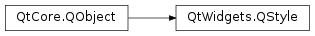

QStyle¶
Inherited by: QCommonStyle, QProxyStyle
Synopsis¶
Functions¶
- def
combinedLayoutSpacing(controls1, controls2, orientation[, option=nullptr[, widget=nullptr]]) - def
proxy()
Virtual functions¶
- def
drawComplexControl(cc, opt, p[, widget=None]) - def
drawControl(element, opt, p[, widget=None]) - def
drawItemPixmap(painter, rect, alignment, pixmap) - def
drawItemText(painter, rect, flags, pal, enabled, text[, textRole=QPalette.NoRole]) - def
drawPrimitive(pe, opt, p[, widget=None]) - def
generatedIconPixmap(iconMode, pixmap, opt) - def
hitTestComplexControl(cc, opt, pt[, widget=None]) - def
itemPixmapRect(r, flags, pixmap) - def
itemTextRect(fm, r, flags, enabled, text) - def
layoutSpacing(control1, control2, orientation[, option=nullptr[, widget=nullptr]]) - def
pixelMetric(metric[, option=nullptr[, widget=nullptr]]) - def
polish(application) - def
polish(palette) - def
polish(widget) - def
sizeFromContents(ct, opt, contentsSize[, w=nullptr]) - def
standardIcon(standardIcon[, option=nullptr[, widget=nullptr]]) - def
standardPalette() - def
standardPixmap(standardPixmap[, opt=nullptr[, widget=nullptr]]) - def
styleHint(stylehint[, opt=nullptr[, widget=nullptr[, returnData=nullptr]]]) - def
subControlRect(cc, opt, sc[, widget=nullptr]) - def
subElementRect(subElement, option[, widget=nullptr]) - def
unpolish(application) - def
unpolish(widget)
Static functions¶
- def
alignedRect(direction, alignment, size, rectangle) - def
sliderPositionFromValue(min, max, val, space[, upsideDown=false]) - def
sliderValueFromPosition(min, max, pos, space[, upsideDown=false]) - def
visualAlignment(direction, alignment) - def
visualPos(direction, boundingRect, logicalPos) - def
visualRect(direction, boundingRect, logicalRect)
Detailed Description¶
The
PySide2.QtWidgets.QStyleclass is an abstract base class that encapsulates the look and feel of a GUI.Qt contains a set of
PySide2.QtWidgets.QStylesubclasses that emulate the styles of the different platforms supported by Qt (QWindowsStyle, QMacStyle etc.). By default, these styles are built into the Qt GUI module. Styles can also be made available as plugins.Qt’s built-in widgets use
PySide2.QtWidgets.QStyleto perform nearly all of their drawing, ensuring that they look exactly like the equivalent native widgets. The diagram below shows aPySide2.QtWidgets.QComboBoxin nine different styles.
Topics:
Setting a Style¶
The style of the entire application can be set using the
QApplication.setStyle()function. It can also be specified by the user of the application, using the-stylecommand-line option:python myapplication.py -style windowsIf no style is specified, Qt will choose the most appropriate style for the user’s platform or desktop environment.
A style can also be set on an individual widget using the
QWidget.setStyle()function.
Developing Style-Aware Custom Widgets¶
If you are developing custom widgets and want them to look good on all platforms, you can use
PySide2.QtWidgets.QStylefunctions to perform parts of the widget drawing, such asPySide2.QtWidgets.QStyle.drawItemText(),PySide2.QtWidgets.QStyle.drawItemPixmap(),PySide2.QtWidgets.QStyle.drawPrimitive(),PySide2.QtWidgets.QStyle.drawControl(), andPySide2.QtWidgets.QStyle.drawComplexControl().Most
PySide2.QtWidgets.QStyledraw functions take four arguments:
- an enum value specifying which graphical element to draw
- a
PySide2.QtWidgets.QStyleOptionspecifying how and where to render that element- a
PySide2.QtGui.QPainterthat should be used to draw the element- a
PySide2.QtWidgets.QWidgeton which the drawing is performed (optional)For example, if you want to draw a focus rectangle on your widget, you can write:
def paintEvent(self, event): painter = QPainter(self) option = QStyleOptionFocusRect() option.initFrom(self) option.backgroundColor = palette().color(QPalette.Background) style().drawPrimitive(QStyle.PE_FrameFocusRect, option, painter, self)
PySide2.QtWidgets.QStylegets all the information it needs to render the graphical element fromPySide2.QtWidgets.QStyleOption. The widget is passed as the last argument in case the style needs it to perform special effects (such as animated default buttons on macOS ), but it isn’t mandatory. In fact, you can usePySide2.QtWidgets.QStyleto draw on any paint device, not just widgets, by setting thePySide2.QtGui.QPainterproperly.
PySide2.QtWidgets.QStyleOptionhas various subclasses for the various types of graphical elements that can be drawn. For example,PE_FrameFocusRectexpects aPySide2.QtWidgets.QStyleOptionFocusRectargument.To ensure that drawing operations are as fast as possible,
PySide2.QtWidgets.QStyleOptionand its subclasses have public data members. See thePySide2.QtWidgets.QStyleOptionclass documentation for details on how to use it.For convenience, Qt provides the
PySide2.QtWidgets.QStylePainterclass, which combines aPySide2.QtWidgets.QStyle, aPySide2.QtGui.QPainter, and aPySide2.QtWidgets.QWidget. This makes it possible to writepainter = QStylePainter(self) ... painter.drawPrimitive(QStyle.PE_FrameFocusRect, option)instead of
painter = QPainter(self) ... style().drawPrimitive(QStyle.PE_FrameFocusRect, option, painter, self)
Creating a Custom Style¶
You can create a custom look and feel for your application by creating a custom style. There are two approaches to creating a custom style. In the static approach, you either choose an existing
PySide2.QtWidgets.QStyleclass, subclass it, and reimplement virtual functions to provide the custom behavior, or you create an entirePySide2.QtWidgets.QStyleclass from scratch. In the dynamic approach, you modify the behavior of your system style at runtime. The static approach is described below. The dynamic approach is described inPySide2.QtWidgets.QProxyStyle.The first step in the static approach is to pick one of the styles provided by Qt from which you will build your custom style. Your choice of
PySide2.QtWidgets.QStyleclass will depend on which style resembles your desired style the most. The most general class that you can use as a base isPySide2.QtWidgets.QCommonStyle(notPySide2.QtWidgets.QStyle). This is because Qt requires its styles to bePySide2.QtWidgets.QCommonStyles.Depending on which parts of the base style you want to change, you must reimplement the functions that are used to draw those parts of the interface. To illustrate this, we will modify the look of the spin box arrows drawn by QWindowsStyle. The arrows are primitive elements that are drawn by the
PySide2.QtWidgets.QStyle.drawPrimitive()function, so we need to reimplement that function. We need the following class declaration:class CustomStyle(QProxyStyle): ... def drawPrimitive(PrimitiveElement element, const QStyleOption *option, QPainter *painter, const QWidget *widget) const; # element : PrimitiveElement # option : QStyleOption # painter : QPainter # widget : QWidget ...To draw its up and down arrows,
PySide2.QtWidgets.QSpinBoxuses thePE_IndicatorSpinUpandPE_IndicatorSpinDownprimitive elements. Here’s how to reimplement thePySide2.QtWidgets.QStyle.drawPrimitive()function to draw them differently:def drawPrimitive(element, option, painter, widget): if element == PE_IndicatorSpinUp or element == PE_IndicatorSpinDown: points = QPolygon(3) x = option->rect.x() y = option->rect.y() w = option->rect.width() / 2 h = option->rect.height() / 2 x += (option->rect.width() - w) / 2 y += (option->rect.height() - h) / 2 if element == PE_IndicatorSpinUp: points[0] = QPoint(x, y + h) points[1] = QPoint(x + w, y + h) points[2] = QPoint(x + w / 2, y) else: # PE_SpinBoxDown points[0] = QPoint(x, y) points[1] = QPoint(x + w, y) points[2] = QPoint(x + w / 2, y + h) if option.state & State_Enabled: painter.setPen(option.palette.mid().color()) painter.setBrush(option.palette.buttonText()) else: painter.setPen(option.palette.buttonText().color()) painter.setBrush(option.palette.mid()) painter.drawPolygon(points) else: QWindowsStyle.drawPrimitive(element, option, painter, widget) }Notice that we don’t use the
widgetargument, except to pass it on to the QWindowStyle::drawPrimitive() function. As mentioned earlier, the information about what is to be drawn and how it should be drawn is specified by aPySide2.QtWidgets.QStyleOptionobject, so there is no need to ask the widget.If you need to use the
widgetargument to obtain additional information, be careful to ensure that it isn’t 0 and that it is of the correct type before using it. For example:if widget: ... <Code snippet "customstyle/customstyle.cpp:1" not found>When implementing a custom style, you cannot assume that the widget is a
PySide2.QtWidgets.QSpinBoxjust because the enum value is calledPE_IndicatorSpinUporPE_IndicatorSpinDown.The documentation for the Styles example covers this topic in more detail.
Warning
Qt style sheets are currently not supported for custom
PySide2.QtWidgets.QStylesubclasses. We plan to address this in some future release.
Using a Custom Style¶
There are several ways of using a custom style in a Qt application. The simplest way is to pass the custom style to the
QApplication.setStyle()static function before creating thePySide2.QtWidgets.QApplicationobject:#include <QtWidgets> #include "customstyle.h" int main(int argc, char *argv[]) { QApplication::setStyle(new CustomStyle); QApplication app(argc, argv); QSpinBox spinBox; spinBox.show(); return app.exec(); }You can call
QApplication.setStyle()at any time, but by calling it before the constructor, you ensure that the user’s preference, set using the-stylecommand-line option, is respected.You may want to make your custom style available for use in other applications, which may not be yours and hence not available for you to recompile. The Qt Plugin system makes it possible to create styles as plugins. Styles created as plugins are loaded as shared objects at runtime by Qt itself. Please refer to the Qt Plugin documentation for more information on how to go about creating a style plugin.
Compile your plugin and put it into Qt’s
plugins/stylesdirectory. We now have a pluggable style that Qt can load automatically. To use your new style with existing applications, simply start the application with the following argument:python myapplication.py -style customThe application will use the look and feel from the custom style you implemented.
Right-to-Left Desktops¶
Languages written from right to left (such as Arabic and Hebrew) usually also mirror the whole layout of widgets, and require the light to come from the screen’s top-right corner instead of top-left.
If you create a custom style, you should take special care when drawing asymmetric elements to make sure that they also look correct in a mirrored layout. An easy way to test your styles is to run applications with the
-reversecommand-line option or to callQApplication.setLayoutDirection()in yourmain()function.Here are some things to keep in mind when making a style work well in a right-to-left environment:
PySide2.QtWidgets.QStyle.subControlRect()andPySide2.QtWidgets.QStyle.subElementRect()return rectangles in screen coordinates- QStyleOption::direction indicates in which direction the item should be drawn in
- If a style is not right-to-left aware it will display items as if it were left-to-right
PySide2.QtWidgets.QStyle.visualRect(),PySide2.QtWidgets.QStyle.visualPos(), andPySide2.QtWidgets.QStyle.visualAlignment()are helpful functions that will translate from logical to screen representations.PySide2.QtWidgets.QStyle.alignedRect()will return a logical rect aligned for the current direction
Styles in Item Views¶
The painting of items in views is performed by a delegate. Qt’s default delegate,
PySide2.QtWidgets.QStyledItemDelegate, is also used for calculating bounding rectangles of items, and their sub-elements for the various kind of itemdata rolesPySide2.QtWidgets.QStyledItemDelegatesupports. See thePySide2.QtWidgets.QStyledItemDelegateclass description to find out which datatypes and roles are supported. You can read more about item data roles in Model/View Programming .When
PySide2.QtWidgets.QStyledItemDelegatepaints its items, it drawsCE_ItemViewItem, and calculates their size withCT_ItemViewItem. Note also that it usesSE_ItemViewItemTextto set the size of editors. When implementing a style to customize drawing of item views, you need to check the implementation ofPySide2.QtWidgets.QCommonStyle(and any other subclasses from which your style inherits). This way, you find out which and how other style elements are painted, and you can then reimplement the painting of elements that should be drawn differently.We include a small example where we customize the drawing of item backgrounds.
switch (element) { case (PE_PanelItemViewItem): { painter->save(); QPoint topLeft = option->rect.topLeft(); QPoint bottomRight = option->rect.topRight(); QLinearGradient backgroundGradient(topLeft, bottomRight); backgroundGradient.setColorAt(0.0, QColor(Qt::yellow).lighter(190)); backgroundGradient.setColorAt(1.0, Qt::white); painter->fillRect(option->rect, QBrush(backgroundGradient)); painter->restore(); break; } default: QProxyStyle::drawPrimitive(element, option, painter, widget); }The primitive element
PE_PanelItemViewItemis responsible for painting the background of items, and is called fromPySide2.QtWidgets.QCommonStyle‘s implementation ofCE_ItemViewItem.To add support for drawing of new datatypes and item data roles, it is necessary to create a custom delegate. But if you only need to support the datatypes implemented by the default delegate, a custom style does not need an accompanying delegate. The
PySide2.QtWidgets.QStyledItemDelegateclass description gives more information on custom delegates.The drawing of item view headers is also done by the style, giving control over size of header items and row and column sizes.
-
class
PySide2.QtWidgets.QStyle¶ Constructs a style object.
-
PySide2.QtWidgets.QStyle.StateFlag¶ This enum describes flags that are used when drawing primitive elements.
Note that not all primitives use all of these flags, and that the flags may mean different things to different items.
Constant Description QStyle.State_None Indicates that the widget does not have a state. QStyle.State_Active Indicates that the widget is active. QStyle.State_AutoRaise Used to indicate if auto-raise appearance should be used on a tool button. QStyle.State_Children Used to indicate if an item view branch has children. QStyle.State_DownArrow Used to indicate if a down arrow should be visible on the widget. QStyle.State_Editing Used to indicate if an editor is opened on the widget. QStyle.State_Enabled Used to indicate if the widget is enabled. QStyle.State_HasEditFocus Used to indicate if the widget currently has edit focus. QStyle.State_HasFocus Used to indicate if the widget has focus. QStyle.State_Horizontal Used to indicate if the widget is laid out horizontally, for example. a tool bar. QStyle.State_KeyboardFocusChange Used to indicate if the focus was changed with the keyboard, e.g., tab, backtab or shortcut. QStyle.State_MouseOver Used to indicate if the widget is under the mouse. QStyle.State_NoChange Used to indicate a tri-state checkbox. QStyle.State_Off Used to indicate if the widget is not checked. QStyle.State_On Used to indicate if the widget is checked. QStyle.State_Raised Used to indicate if a button is raised. QStyle.State_ReadOnly Used to indicate if a widget is read-only. QStyle.State_Selected Used to indicate if a widget is selected. QStyle.State_Item Used by item views to indicate if a horizontal branch should be drawn. QStyle.State_Open Used by item views to indicate if the tree branch is open. QStyle.State_Sibling Used by item views to indicate if a vertical line needs to be drawn (for siblings). QStyle.State_Sunken Used to indicate if the widget is sunken or pressed. QStyle.State_UpArrow Used to indicate if an up arrow should be visible on the widget. QStyle.State_Mini Used to indicate a mini style Mac widget or button. QStyle.State_Small Used to indicate a small style Mac widget or button.
-
PySide2.QtWidgets.QStyle.PrimitiveElement¶ This enum describes the various primitive elements. A primitive element is a common GUI element, such as a checkbox indicator or button bevel.
Constant Description QStyle.PE_FrameStatusBar Obsolete. Use instead. QStyle.PE_PanelButtonCommand Button used to initiate an action, for example, a PySide2.QtWidgets.QPushButton.QStyle.PE_FrameDefaultButton This frame around a default button, e.g. in a dialog. QStyle.PE_PanelButtonBevel Generic panel with a button bevel. QStyle.PE_PanelButtonTool Panel for a Tool button, used with PySide2.QtWidgets.QToolButton.QStyle.PE_PanelLineEdit Panel for a PySide2.QtWidgets.QLineEdit.QStyle.PE_IndicatorButtonDropDown Indicator for a drop down button, for example, a tool button that displays a menu. QStyle.PE_FrameFocusRect Generic focus indicator. QStyle.PE_IndicatorArrowUp Generic Up arrow. QStyle.PE_IndicatorArrowDown Generic Down arrow. QStyle.PE_IndicatorArrowRight Generic Right arrow. QStyle.PE_IndicatorArrowLeft Generic Left arrow. QStyle.PE_IndicatorSpinUp Up symbol for a spin widget, for example a PySide2.QtWidgets.QSpinBox.QStyle.PE_IndicatorSpinDown Down symbol for a spin widget. QStyle.PE_IndicatorSpinPlus Increase symbol for a spin widget. QStyle.PE_IndicatorSpinMinus Decrease symbol for a spin widget. QStyle.PE_IndicatorItemViewItemCheck On/off indicator for a view item. QStyle.PE_IndicatorCheckBox On/off indicator, for example, a PySide2.QtWidgets.QCheckBox.QStyle.PE_IndicatorRadioButton Exclusive on/off indicator, for example, a PySide2.QtWidgets.QRadioButton.QStyle.PE_IndicatorDockWidgetResizeHandle Resize handle for dock windows. QStyle.PE_Frame Generic frame QStyle.PE_FrameMenu Frame for popup windows/menus; see also PySide2.QtWidgets.QMenu.QStyle.PE_PanelMenuBar Panel for menu bars. QStyle.PE_PanelScrollAreaCorner Panel at the bottom-right (or bottom-left) corner of a scroll area. QStyle.PE_FrameDockWidget Panel frame for dock windows and toolbars. QStyle.PE_FrameTabWidget Frame for tab widgets. QStyle.PE_FrameLineEdit Panel frame for line edits. QStyle.PE_FrameGroupBox Panel frame around group boxes. QStyle.PE_FrameButtonBevel Panel frame for a button bevel. QStyle.PE_FrameButtonTool Panel frame for a tool button. QStyle.PE_IndicatorHeaderArrow Arrow used to indicate sorting on a list or table header. QStyle.PE_FrameStatusBarItem Frame for an item of a status bar; see also PySide2.QtWidgets.QStatusBar.QStyle.PE_FrameWindow Frame around a MDI window or a docking window. QStyle.PE_IndicatorMenuCheckMark Check mark used in a menu. QStyle.PE_IndicatorProgressChunk Section of a progress bar indicator; see also PySide2.QtWidgets.QProgressBar.QStyle.PE_IndicatorBranch Lines used to represent the branch of a tree in a tree view. QStyle.PE_IndicatorToolBarHandle The handle of a toolbar. QStyle.PE_IndicatorToolBarSeparator The separator in a toolbar. QStyle.PE_PanelToolBar The panel for a toolbar. QStyle.PE_PanelTipLabel The panel for a tip label. QStyle.PE_FrameTabBarBase The frame that is drawn for a tab bar, ususally drawn for a tab bar that isn’t part of a tab widget. QStyle.PE_IndicatorTabTear Deprecated. Use PE_IndicatorTabTearLeft instead. QStyle.PE_IndicatorTabTearLeft An indicator that a tab is partially scrolled out on the left side of the visible tab bar when there are many tabs. QStyle.PE_IndicatorTabTearRight An indicator that a tab is partially scrolled out on the right side of the visible tab bar when there are many tabs. QStyle.PE_IndicatorColumnViewArrow An arrow in a PySide2.QtWidgets.QColumnView.QStyle.PE_Widget A plain PySide2.QtWidgets.QWidget.QStyle.PE_CustomBase Base value for custom primitive elements. All values above this are reserved for custom use. Custom values must be greater than this value. QStyle.PE_IndicatorItemViewItemDrop An indicator that is drawn to show where an item in an item view is about to be dropped during a drag-and-drop operation in an item view. QStyle.PE_PanelItemViewItem The background for an item in an item view. QStyle.PE_PanelItemViewRow The background of a row in an item view. QStyle.PE_PanelStatusBar The panel for a status bar. QStyle.PE_IndicatorTabClose The close button on a tab bar. QStyle.PE_PanelMenu The panel for a menu.
-
PySide2.QtWidgets.QStyle.ControlElement¶ This enum represents a control element. A control element is a part of a widget that performs some action or displays information to the user.
Constant Description QStyle.CE_PushButton A PySide2.QtWidgets.QPushButton, draws , andPE_FrameFocusRect.QStyle.CE_PushButtonBevel The bevel and default indicator of a PySide2.QtWidgets.QPushButton.QStyle.CE_PushButtonLabel The label (an icon with text or pixmap) of a PySide2.QtWidgets.QPushButton.QStyle.CE_DockWidgetTitle Dock window title. QStyle.CE_Splitter Splitter handle; see also PySide2.QtWidgets.QSplitter.QStyle.CE_CheckBox A PySide2.QtWidgets.QCheckBox, draws aPE_IndicatorCheckBox, a and aPE_FrameFocusRect.QStyle.CE_CheckBoxLabel The label (text or pixmap) of a PySide2.QtWidgets.QCheckBox.QStyle.CE_RadioButton A PySide2.QtWidgets.QRadioButton, draws aPE_IndicatorRadioButton, a and aPE_FrameFocusRect.QStyle.CE_RadioButtonLabel The label (text or pixmap) of a PySide2.QtWidgets.QRadioButton.QStyle.CE_TabBarTab The tab and label within a PySide2.QtWidgets.QTabBar.QStyle.CE_TabBarTabShape The tab shape within a tab bar. QStyle.CE_TabBarTabLabel The label within a tab. QStyle.CE_ProgressBar A PySide2.QtWidgets.QProgressBar, draws , and .QStyle.CE_ProgressBarGroove The groove where the progress indicator is drawn in a PySide2.QtWidgets.QProgressBar.QStyle.CE_ProgressBarContents The progress indicator of a PySide2.QtWidgets.QProgressBar.QStyle.CE_ProgressBarLabel The text label of a PySide2.QtWidgets.QProgressBar.QStyle.CE_ToolButtonLabel A tool button’s label. QStyle.CE_MenuBarItem A menu item in a PySide2.QtWidgets.QMenuBar.QStyle.CE_MenuBarEmptyArea The empty area of a PySide2.QtWidgets.QMenuBar.QStyle.CE_MenuItem A menu item in a PySide2.QtWidgets.QMenu.QStyle.CE_MenuScroller Scrolling areas in a PySide2.QtWidgets.QMenuwhen the style supports scrolling.QStyle.CE_MenuTearoff A menu item representing the tear off section of a PySide2.QtWidgets.QMenu.QStyle.CE_MenuEmptyArea The area in a menu without menu items. QStyle.CE_MenuHMargin The horizontal extra space on the left/right of a menu. QStyle.CE_MenuVMargin The vertical extra space on the top/bottom of a menu. QStyle.CE_ToolBoxTab The toolbox’s tab and label within a PySide2.QtWidgets.QToolBox.QStyle.CE_SizeGrip Window resize handle; see also PySide2.QtWidgets.QSizeGrip.QStyle.CE_Header A header. QStyle.CE_HeaderSection A header section. QStyle.CE_HeaderLabel The header’s label. QStyle.CE_ScrollBarAddLine Scroll bar line increase indicator. (i.e., scroll down); see also PySide2.QtWidgets.QScrollBar.QStyle.CE_ScrollBarSubLine Scroll bar line decrease indicator (i.e., scroll up). QStyle.CE_ScrollBarAddPage Scolllbar page increase indicator (i.e., page down). QStyle.CE_ScrollBarSubPage Scroll bar page decrease indicator (i.e., page up). QStyle.CE_ScrollBarSlider Scroll bar slider. QStyle.CE_ScrollBarFirst Scroll bar first line indicator (i.e., home). QStyle.CE_ScrollBarLast Scroll bar last line indicator (i.e., end). QStyle.CE_RubberBand Rubber band used in for example an icon view. QStyle.CE_FocusFrame Focus frame that is style controlled. QStyle.CE_ItemViewItem An item inside an item view. QStyle.CE_CustomBase Base value for custom control elements; custom values must be greater than this value. QStyle.CE_ComboBoxLabel The label of a non-editable PySide2.QtWidgets.QComboBox.QStyle.CE_ToolBar A toolbar like PySide2.QtWidgets.QToolBar.QStyle.CE_ToolBoxTabShape The toolbox’s tab shape. QStyle.CE_ToolBoxTabLabel The toolbox’s tab label. QStyle.CE_HeaderEmptyArea The area of a header view where there are no header sections. QStyle.CE_ShapedFrame The frame with the shape specified in the PySide2.QtWidgets.QStyleOptionFrame; seePySide2.QtWidgets.QFrame.
-
PySide2.QtWidgets.QStyle.SubElement¶ This enum represents a sub-area of a widget. Style implementations use these areas to draw the different parts of a widget.
Constant Description QStyle.SE_PushButtonContents Area containing the label (icon with text or pixmap). QStyle.SE_PushButtonFocusRect Area for the focus rect (usually larger than the contents rect). QStyle.SE_PushButtonLayoutItem Area that counts for the parent layout. QStyle.SE_CheckBoxIndicator Area for the state indicator (e.g., check mark). QStyle.SE_CheckBoxContents Area for the label (text or pixmap). QStyle.SE_CheckBoxFocusRect Area for the focus indicator. QStyle.SE_CheckBoxClickRect Clickable area, defaults to . QStyle.SE_CheckBoxLayoutItem Area that counts for the parent layout. QStyle.SE_DateTimeEditLayoutItem Area that counts for the parent layout. QStyle.SE_RadioButtonIndicator Area for the state indicator. QStyle.SE_RadioButtonContents Area for the label. QStyle.SE_RadioButtonFocusRect Area for the focus indicator. QStyle.SE_RadioButtonClickRect Clickable area, defaults to . QStyle.SE_RadioButtonLayoutItem Area that counts for the parent layout. QStyle.SE_ComboBoxFocusRect Area for the focus indicator. QStyle.SE_SliderFocusRect Area for the focus indicator. QStyle.SE_SliderLayoutItem Area that counts for the parent layout. QStyle.SE_SpinBoxLayoutItem Area that counts for the parent layout. QStyle.SE_ProgressBarGroove Area for the groove. QStyle.SE_ProgressBarContents Area for the progress indicator. QStyle.SE_ProgressBarLabel Area for the text label. QStyle.SE_ProgressBarLayoutItem Area that counts for the parent layout. QStyle.SE_FrameContents Area for a frame’s contents. QStyle.SE_ShapedFrameContents Area for a frame’s contents using the shape in PySide2.QtWidgets.QStyleOptionFrame; seePySide2.QtWidgets.QFrameQStyle.SE_FrameLayoutItem Area that counts for the parent layout. QStyle.SE_HeaderArrow Area for the sort indicator for a header. QStyle.SE_HeaderLabel Area for the label in a header. QStyle.SE_LabelLayoutItem Area that counts for the parent layout. QStyle.SE_LineEditContents Area for a line edit’s contents. QStyle.SE_TabWidgetLeftCorner Area for the left corner widget in a tab widget. QStyle.SE_TabWidgetRightCorner Area for the right corner widget in a tab widget. QStyle.SE_TabWidgetTabBar Area for the tab bar widget in a tab widget. QStyle.SE_TabWidgetTabContents Area for the contents of the tab widget. QStyle.SE_TabWidgetTabPane Area for the pane of a tab widget. QStyle.SE_TabWidgetLayoutItem Area that counts for the parent layout. QStyle.SE_ToolBoxTabContents Area for a toolbox tab’s icon and label. QStyle.SE_ToolButtonLayoutItem Area that counts for the parent layout. QStyle.SE_ItemViewItemCheckIndicator Area for a view item’s check mark. QStyle.SE_TabBarTearIndicator Deprecated. Use instead. QStyle.SE_TabBarTearIndicatorLeft Area for the tear indicator on the left side of a tab bar with scroll arrows. QStyle.SE_TabBarTearIndicatorRight Area for the tear indicator on the right side of a tab bar with scroll arrows. QStyle.SE_TabBarScrollLeftButton Area for the scroll left button on a tab bar with scroll buttons. QStyle.SE_TabBarScrollRightButton Area for the scroll right button on a tab bar with scroll buttons. QStyle.SE_TreeViewDisclosureItem Area for the actual disclosure item in a tree branch. QStyle.SE_DialogButtonBoxLayoutItem Area that counts for the parent layout. QStyle.SE_GroupBoxLayoutItem Area that counts for the parent layout. QStyle.SE_CustomBase Base value for custom sub-elements. Custom values must be greater than this value. QStyle.SE_DockWidgetFloatButton The float button of a dock widget. QStyle.SE_DockWidgetTitleBarText The text bounds of the dock widgets title. QStyle.SE_DockWidgetCloseButton The close button of a dock widget. QStyle.SE_DockWidgetIcon The icon of a dock widget. QStyle.SE_ComboBoxLayoutItem Area that counts for the parent layout. QStyle.SE_ItemViewItemDecoration Area for a view item’s decoration (icon). QStyle.SE_ItemViewItemText Area for a view item’s text. QStyle.SE_ItemViewItemFocusRect Area for a view item’s focus rect. QStyle.SE_TabBarTabLeftButton Area for a widget on the left side of a tab in a tab bar. QStyle.SE_TabBarTabRightButton Area for a widget on the right side of a tab in a tab bar. QStyle.SE_TabBarTabText Area for the text on a tab in a tab bar. QStyle.SE_ToolBarHandle Area for the handle of a tool bar.
-
PySide2.QtWidgets.QStyle.ComplexControl¶ This enum describes the available complex controls. Complex controls have different behavior depending upon where the user clicks on them or which keys are pressed.
Constant Description QStyle.CC_SpinBox A spinbox, like PySide2.QtWidgets.QSpinBox.QStyle.CC_ComboBox A combobox, like PySide2.QtWidgets.QComboBox.QStyle.CC_ScrollBar A scroll bar, like PySide2.QtWidgets.QScrollBar.QStyle.CC_Slider A slider, like PySide2.QtWidgets.QSlider.QStyle.CC_ToolButton A tool button, like PySide2.QtWidgets.QToolButton.QStyle.CC_TitleBar A Title bar, like those used in PySide2.QtWidgets.QMdiSubWindow.QStyle.CC_GroupBox A group box, like PySide2.QtWidgets.QGroupBox.QStyle.CC_Dial A dial, like PySide2.QtWidgets.QDial.QStyle.CC_MdiControls The minimize, close, and normal button in the menu bar for a maximized MDI subwindow. QStyle.CC_CustomBase Base value for custom complex controls. Custom values must be greater than this value. See also
QStyle.SubControlPySide2.QtWidgets.QStyle.drawComplexControl()
-
PySide2.QtWidgets.QStyle.SubControl¶ This enum describes the available sub controls. A subcontrol is a control element within a complex control (
QStyle.ComplexControl).Constant Description QStyle.SC_None Special value that matches no other sub control. QStyle.SC_ScrollBarAddLine Scroll bar add line (i.e., down/right arrow); see also PySide2.QtWidgets.QScrollBar.QStyle.SC_ScrollBarSubLine Scroll bar sub line (i.e., up/left arrow). QStyle.SC_ScrollBarAddPage Scroll bar add page (i.e., page down). QStyle.SC_ScrollBarSubPage Scroll bar sub page (i.e., page up). QStyle.SC_ScrollBarFirst Scroll bar first line (i.e., home). QStyle.SC_ScrollBarLast Scroll bar last line (i.e., end). QStyle.SC_ScrollBarSlider Scroll bar slider handle. QStyle.SC_ScrollBarGroove Special sub-control which contains the area in which the slider handle may move. QStyle.SC_SpinBoxUp Spin widget up/increase; see also PySide2.QtWidgets.QSpinBox.QStyle.SC_SpinBoxDown Spin widget down/decrease. QStyle.SC_SpinBoxFrame Spin widget frame. QStyle.SC_SpinBoxEditField Spin widget edit field. QStyle.SC_ComboBoxEditField Combobox edit field; see also PySide2.QtWidgets.QComboBox.QStyle.SC_ComboBoxArrow Combobox arrow button. QStyle.SC_ComboBoxFrame Combobox frame. QStyle.SC_ComboBoxListBoxPopup The reference rectangle for the combobox popup. Used to calculate the position of the popup. QStyle.SC_SliderGroove Special sub-control which contains the area in which the slider handle may move. QStyle.SC_SliderHandle Slider handle. QStyle.SC_SliderTickmarks Slider tickmarks. QStyle.SC_ToolButton Tool button (see also PySide2.QtWidgets.QToolButton).QStyle.SC_ToolButtonMenu Sub-control for opening a popup menu in a tool button. QStyle.SC_TitleBarSysMenu System menu button (i.e., restore, close, etc.). QStyle.SC_TitleBarMinButton Minimize button. QStyle.SC_TitleBarMaxButton Maximize button. QStyle.SC_TitleBarCloseButton Close button. QStyle.SC_TitleBarLabel Window title label. QStyle.SC_TitleBarNormalButton Normal (restore) button. QStyle.SC_TitleBarShadeButton Shade button. QStyle.SC_TitleBarUnshadeButton Unshade button. QStyle.SC_TitleBarContextHelpButton Context Help button. QStyle.SC_DialHandle The handle of the dial (i.e. what you use to control the dial). QStyle.SC_DialGroove The groove for the dial. QStyle.SC_DialTickmarks The tickmarks for the dial. QStyle.SC_GroupBoxFrame The frame of a group box. QStyle.SC_GroupBoxLabel The title of a group box. QStyle.SC_GroupBoxCheckBox The optional check box of a group box. QStyle.SC_GroupBoxContents The group box contents. QStyle.SC_MdiNormalButton The normal button for a MDI subwindow in the menu bar. QStyle.SC_MdiMinButton The minimize button for a MDI subwindow in the menu bar. QStyle.SC_MdiCloseButton The close button for a MDI subwindow in the menu bar. QStyle.SC_All Special value that matches all sub-controls. See also
QStyle.ComplexControl
-
PySide2.QtWidgets.QStyle.PixelMetric¶ This enum describes the various available pixel metrics. A pixel metric is a style dependent size represented by a single pixel value.
Constant Description QStyle.PM_ButtonMargin Amount of whitespace between push button labels and the frame. QStyle.PM_DockWidgetTitleBarButtonMargin Amount of whitespace between dock widget’s title bar button labels and the frame. QStyle.PM_ButtonDefaultIndicator Width of the default-button indicator frame. QStyle.PM_MenuButtonIndicator Width of the menu button indicator proportional to the widget height. QStyle.PM_ButtonShiftHorizontal Horizontal contents shift of a button when the button is down. QStyle.PM_ButtonShiftVertical Vertical contents shift of a button when the button is down. QStyle.PM_DefaultFrameWidth Default frame width (usually 2). QStyle.PM_SpinBoxFrameWidth Frame width of a spin box, defaults to . QStyle.PM_ComboBoxFrameWidth Frame width of a combo box, defaults to . QStyle.PM_MDIFrameWidth Obsolete. Use instead. QStyle.PM_MdiSubWindowFrameWidth Frame width of an MDI window. QStyle.PM_MDIMinimizedWidth Obsolete. Use instead. QStyle.PM_MdiSubWindowMinimizedWidth Width of a minimized MDI window. QStyle.PM_LayoutLeftMargin Default left marginfor aPySide2.QtWidgets.QLayout.QStyle.PM_LayoutTopMargin Default top marginfor aPySide2.QtWidgets.QLayout.QStyle.PM_LayoutRightMargin Default right marginfor aPySide2.QtWidgets.QLayout.QStyle.PM_LayoutBottomMargin Default bottom marginfor aPySide2.QtWidgets.QLayout.QStyle.PM_LayoutHorizontalSpacing Default horizontal spacingfor aPySide2.QtWidgets.QLayout.QStyle.PM_LayoutVerticalSpacing Default vertical spacingfor aPySide2.QtWidgets.QLayout.QStyle.PM_MaximumDragDistance The maximum allowed distance between the mouse and a scrollbar when dragging. Exceeding the specified distance will cause the slider to jump back to the original position; a value of -1 disables this behavior. QStyle.PM_ScrollBarExtent Width of a vertical scroll bar and the height of a horizontal scroll bar. QStyle.PM_ScrollBarSliderMin The minimum height of a vertical scroll bar’s slider and the minimum width of a horizontal scroll bar’s slider. QStyle.PM_SliderThickness Total slider thickness. QStyle.PM_SliderControlThickness Thickness of the slider handle. QStyle.PM_SliderLength Length of the slider. QStyle.PM_SliderTickmarkOffset The offset between the tickmarks and the slider. QStyle.PM_SliderSpaceAvailable The available space for the slider to move. QStyle.PM_DockWidgetSeparatorExtent Width of a separator in a horizontal dock window and the height of a separator in a vertical dock window. QStyle.PM_DockWidgetHandleExtent Width of the handle in a horizontal dock window and the height of the handle in a vertical dock window. QStyle.PM_DockWidgetFrameWidth Frame width of a dock window. QStyle.PM_DockWidgetTitleMargin Margin of the dock window title. QStyle.PM_MenuBarPanelWidth Frame width of a menu bar, defaults to . QStyle.PM_MenuBarItemSpacing Spacing between menu bar items. QStyle.PM_MenuBarHMargin Spacing between menu bar items and left/right of bar. QStyle.PM_MenuBarVMargin Spacing between menu bar items and top/bottom of bar. QStyle.PM_ToolBarFrameWidth Width of the frame around toolbars. QStyle.PM_ToolBarHandleExtent Width of a toolbar handle in a horizontal toolbar and the height of the handle in a vertical toolbar. QStyle.PM_ToolBarItemMargin Spacing between the toolbar frame and the items. QStyle.PM_ToolBarItemSpacing Spacing between toolbar items. QStyle.PM_ToolBarSeparatorExtent Width of a toolbar separator in a horizontal toolbar and the height of a separator in a vertical toolbar. QStyle.PM_ToolBarExtensionExtent Width of a toolbar extension button in a horizontal toolbar and the height of the button in a vertical toolbar. QStyle.PM_TabBarTabOverlap Number of pixels the tabs should overlap. (Currently only used in styles, not inside of PySide2.QtWidgets.QTabBar)QStyle.PM_TabBarTabHSpace Extra space added to the tab width. QStyle.PM_TabBarTabVSpace Extra space added to the tab height. QStyle.PM_TabBarBaseHeight Height of the area between the tab bar and the tab pages. QStyle.PM_TabBarBaseOverlap Number of pixels the tab bar overlaps the tab bar base. QStyle.PM_TabBarScrollButtonWidth QStyle.PM_TabBarTabShiftHorizontal Horizontal pixel shift when a tab is selected. QStyle.PM_TabBarTabShiftVertical Vertical pixel shift when a tab is selected. QStyle.PM_ProgressBarChunkWidth Width of a chunk in a progress bar indicator. QStyle.PM_SplitterWidth Width of a splitter. QStyle.PM_TitleBarHeight Height of the title bar. QStyle.PM_IndicatorWidth Width of a check box indicator. QStyle.PM_IndicatorHeight Height of a checkbox indicator. QStyle.PM_ExclusiveIndicatorWidth Width of a radio button indicator. QStyle.PM_ExclusiveIndicatorHeight Height of a radio button indicator. QStyle.PM_MenuPanelWidth Border width (applied on all sides) for a PySide2.QtWidgets.QMenu.QStyle.PM_MenuHMargin Additional border (used on left and right) for a PySide2.QtWidgets.QMenu.QStyle.PM_MenuVMargin Additional border (used for bottom and top) for a PySide2.QtWidgets.QMenu.QStyle.PM_MenuScrollerHeight Height of the scroller area in a PySide2.QtWidgets.QMenu.QStyle.PM_MenuTearoffHeight Height of a tear off area in a PySide2.QtWidgets.QMenu.QStyle.PM_MenuDesktopFrameWidth The frame width for the menu on the desktop. QStyle.PM_HeaderMarkSize The size of the sort indicator in a header. QStyle.PM_HeaderGripMargin The size of the resize grip in a header. QStyle.PM_HeaderMargin The size of the margin between the sort indicator and the text. QStyle.PM_SpinBoxSliderHeight The height of the optional spin box slider. QStyle.PM_ToolBarIconSize Default tool bar icon size QStyle.PM_SmallIconSize Default small icon size QStyle.PM_LargeIconSize Default large icon size QStyle.PM_FocusFrameHMargin Horizontal margin that the focus frame will outset the widget by. QStyle.PM_FocusFrameVMargin Vertical margin that the focus frame will outset the widget by. QStyle.PM_IconViewIconSize The default size for icons in an icon view. QStyle.PM_ListViewIconSize The default size for icons in a list view. QStyle.PM_ToolTipLabelFrameWidth The frame width for a tool tip label. QStyle.PM_CheckBoxLabelSpacing The spacing between a check box indicator and its label. QStyle.PM_RadioButtonLabelSpacing The spacing between a radio button indicator and its label. QStyle.PM_TabBarIconSize The default icon size for a tab bar. QStyle.PM_SizeGripSize The size of a size grip. QStyle.PM_MessageBoxIconSize The size of the standard icons in a message box QStyle.PM_ButtonIconSize The default size of button icons QStyle.PM_TextCursorWidth The width of the cursor in a line edit or text edit QStyle.PM_TabBar_ScrollButtonOverlap The distance between the left and right buttons in a tab bar. QStyle.PM_TabCloseIndicatorWidth The default width of a close button on a tab in a tab bar. QStyle.PM_TabCloseIndicatorHeight The default height of a close button on a tab in a tab bar. QStyle.PM_ScrollView_ScrollBarSpacing Distance between frame and scrollbar with SH_ScrollView_FrameOnlyAroundContentsset.QStyle.PM_ScrollView_ScrollBarOverlap Overlap between scroll bars and scroll content QStyle.PM_SubMenuOverlap The horizontal overlap between a submenu and its parent. QStyle.PM_TreeViewIndentation The indentation of items in a tree view. This enum value has been introduced in Qt 5.4. QStyle.PM_HeaderDefaultSectionSizeHorizontal The default size of sections in a horizontal header. This enum value has been introduced in Qt 5.5. QStyle.PM_HeaderDefaultSectionSizeVertical The default size of sections in a vertical header. This enum value has been introduced in Qt 5.5. QStyle.PM_TitleBarButtonIconSize The size of button icons on a title bar. This enum value has been introduced in Qt 5.8. QStyle.PM_TitleBarButtonSize The size of buttons on a title bar. This enum value has been introduced in Qt 5.8. QStyle.PM_CustomBase Base value for custom pixel metrics. Custom values must be greater than this value. The following values are obsolete:
Constant Description QStyle.PM_DefaultTopLevelMargin Use , , , and instead. QStyle.PM_DefaultChildMargin Use , , , and instead. QStyle.PM_DefaultLayoutSpacing Use and instead.
-
PySide2.QtWidgets.QStyle.ContentsType¶ This enum describes the available contents types. These are used to calculate sizes for the contents of various widgets.
Constant Description QStyle.CT_CheckBox A check box, like PySide2.QtWidgets.QCheckBox.QStyle.CT_ComboBox A combo box, like PySide2.QtWidgets.QComboBox.QStyle.CT_HeaderSection A header section, like QHeader. QStyle.CT_LineEdit A line edit, like PySide2.QtWidgets.QLineEdit.QStyle.CT_Menu A menu, like PySide2.QtWidgets.QMenu.QStyle.CT_MenuBar A menu bar, like PySide2.QtWidgets.QMenuBar.QStyle.CT_MenuBarItem A menu bar item, like the buttons in a PySide2.QtWidgets.QMenuBar.QStyle.CT_MenuItem A menu item, like QMenuItem. QStyle.CT_ProgressBar A progress bar, like PySide2.QtWidgets.QProgressBar.QStyle.CT_PushButton A push button, like PySide2.QtWidgets.QPushButton.QStyle.CT_RadioButton A radio button, like PySide2.QtWidgets.QRadioButton.QStyle.CT_SizeGrip A size grip, like PySide2.QtWidgets.QSizeGrip.QStyle.CT_Slider A slider, like PySide2.QtWidgets.QSlider.QStyle.CT_ScrollBar A scroll bar, like PySide2.QtWidgets.QScrollBar.QStyle.CT_SpinBox A spin box, like PySide2.QtWidgets.QSpinBox.QStyle.CT_Splitter A splitter, like PySide2.QtWidgets.QSplitter.QStyle.CT_TabBarTab A tab on a tab bar, like PySide2.QtWidgets.QTabBar.QStyle.CT_TabWidget A tab widget, like PySide2.QtWidgets.QTabWidget.QStyle.CT_ToolButton A tool button, like PySide2.QtWidgets.QToolButton.QStyle.CT_GroupBox A group box, like PySide2.QtWidgets.QGroupBox.QStyle.CT_ItemViewItem An item inside an item view. QStyle.CT_CustomBase Base value for custom contents types. Custom values must be greater than this value. QStyle.CT_MdiControls The minimize, normal, and close button in the menu bar for a maximized MDI subwindow.
-
PySide2.QtWidgets.QStyle.RequestSoftwareInputPanel¶ This enum describes under what circumstances a software input panel will be requested by input capable widgets.
Constant Description QStyle.RSIP_OnMouseClickAndAlreadyFocused Requests an input panel if the user clicks on the widget, but only if it is already focused. QStyle.RSIP_OnMouseClick Requests an input panel if the user clicks on the widget. See also
PySide2.QtGui.QInputMethod
Note
This enum was introduced in Qt 4.6.
-
PySide2.QtWidgets.QStyle.StyleHint¶ This enum describes the available style hints. A style hint is a general look and/or feel hint.
Constant Description QStyle.SH_EtchDisabledText Disabled text is “etched” as it is on Windows. QStyle.SH_DitherDisabledText Disabled text is dithered as it is on Motif. QStyle.SH_ScrollBar_ContextMenu Whether or not a scroll bar has a context menu. QStyle.SH_ScrollBar_MiddleClickAbsolutePosition A boolean value. If true, middle clicking on a scroll bar causes the slider to jump to that position. If false, middle clicking is ignored. QStyle.SH_ScrollBar_LeftClickAbsolutePosition A boolean value. If true, left clicking on a scroll bar causes the slider to jump to that position. If false, left clicking will behave as appropriate for each control. QStyle.SH_ScrollBar_ScrollWhenPointerLeavesControl A boolean value. If true, when clicking a scroll bar QStyle.SubControl, holding the mouse button down and moving the pointer outside theQStyle.SubControl, the scroll bar continues to scroll. If false, the scollbar stops scrolling when the pointer leaves theQStyle.SubControl.QStyle.SH_ScrollBar_RollBetweenButtons A boolean value. If true, when clicking a scroll bar button ( SC_ScrollBarAddLineorSC_ScrollBarSubLine) and dragging over to the opposite button (rolling) will press the new button and release the old one. When it is false, the original button is released and nothing happens (like a push button).QStyle.SH_TabBar_Alignment The alignment for tabs in a PySide2.QtWidgets.QTabWidget. Possible values areQt.AlignLeft,Qt.AlignCenterandQt.AlignRight.QStyle.SH_Header_ArrowAlignment The placement of the sorting indicator may appear in list or table headers. Possible values are Qt.Alignmentvalues (that is, an OR combination ofQt.AlignmentFlagflags).QStyle.SH_Slider_SnapToValue Sliders snap to values while moving, as they do on Windows. QStyle.SH_Slider_SloppyKeyEvents Key presses handled in a sloppy manner, i.e., left on a vertical slider subtracts a line. QStyle.SH_ProgressDialog_CenterCancelButton Center button on progress dialogs, otherwise right aligned. QStyle.SH_ProgressDialog_TextLabelAlignment The alignment for text labels in progress dialogs; Qt.AlignCenteron Windows,Qt.AlignVCenterotherwise.QStyle.SH_PrintDialog_RightAlignButtons Right align buttons in the print dialog, as done on Windows. QStyle.SH_MainWindow_SpaceBelowMenuBar One or two pixel space between the menu bar and the dockarea, as done on Windows. QStyle.SH_FontDialog_SelectAssociatedText Select the text in the line edit, or when selecting an item from the listbox, or when the line edit receives focus, as done on Windows. QStyle.SH_Menu_KeyboardSearch Typing causes a menu to be search for relevant items, otherwise only mnemnonic is considered. QStyle.SH_Menu_AllowActiveAndDisabled Allows disabled menu items to be active. QStyle.SH_Menu_SpaceActivatesItem Pressing the space bar activates the item, as done on Motif. QStyle.SH_Menu_SubMenuPopupDelay The number of milliseconds to wait before opening a submenu (256 on Windows, 96 on Motif). QStyle.SH_Menu_Scrollable Whether popup menus must support scrolling. QStyle.SH_Menu_SloppySubMenus Whether popup menus must support the user moving the mouse cursor to a submenu while crossing other items of the menu. This is supported on most modern desktop platforms. QStyle.SH_Menu_SubMenuUniDirection Since Qt 5.5. If the cursor has to move towards the submenu (like it is on macOS ), or if the cursor can move in any direction as long as it reaches the submenu before the sloppy timeout. QStyle.SH_Menu_SubMenuUniDirectionFailCount Since Qt 5.5. When is defined this enum defines the number of failed mouse moves before the sloppy submenu is discarded. This can be used to control the “strictness” of the uni direction algorithm. QStyle.SH_Menu_SubMenuSloppySelectOtherActions Since Qt 5.5. Should other action items be selected when the mouse moves towards a sloppy submenu. QStyle.SH_Menu_SubMenuSloppyCloseTimeout Since Qt 5.5. The timeout used to close sloppy submenus. QStyle.SH_Menu_SubMenuResetWhenReenteringParent Since Qt 5.5. When entering parent from child submenu, should the sloppy state be reset, effectively closing the child and making the current submenu active. QStyle.SH_Menu_SubMenuDontStartSloppyOnLeave Since Qt 5.5. Do not start sloppy timers when the mouse leaves a sub-menu. QStyle.SH_ScrollView_FrameOnlyAroundContents Whether scrollviews draw their frame only around contents (like Motif), or around contents, scroll bars and corner widgets (like Windows). QStyle.SH_MenuBar_AltKeyNavigation Menu bars items are navigable by pressing Alt, followed by using the arrow keys to select the desired item. QStyle.SH_ComboBox_ListMouseTracking Mouse tracking in combobox drop-down lists. QStyle.SH_Menu_MouseTracking Mouse tracking in popup menus. QStyle.SH_MenuBar_MouseTracking Mouse tracking in menu bars. QStyle.SH_Menu_FillScreenWithScroll Whether scrolling popups should fill the screen as they are scrolled. QStyle.SH_Menu_SelectionWrap Whether popups should allow the selections to wrap, that is when selection should the next item be the first item. QStyle.SH_ItemView_ChangeHighlightOnFocus Gray out selected items when losing focus. QStyle.SH_Widget_ShareActivation Turn on sharing activation with floating modeless dialogs. QStyle.SH_TabBar_SelectMouseType Which type of mouse event should cause a tab to be selected. QStyle.SH_ListViewExpand_SelectMouseType Which type of mouse event should cause a list view expansion to be selected. QStyle.SH_TabBar_PreferNoArrows Whether a tab bar should suggest a size to prevent scoll arrows. QStyle.SH_ComboBox_Popup Allows popups as a combobox drop-down menu. QStyle.SH_Workspace_FillSpaceOnMaximize The workspace should maximize the client area. QStyle.SH_TitleBar_NoBorder The title bar has no border. QStyle.SH_ScrollBar_StopMouseOverSlider Obsolete. Use instead. QStyle.SH_Slider_StopMouseOverSlider Stops auto-repeat when the slider reaches the mouse position. QStyle.SH_BlinkCursorWhenTextSelected Whether cursor should blink when text is selected. QStyle.SH_RichText_FullWidthSelection Whether richtext selections should extend to the full width of the document. QStyle.SH_GroupBox_TextLabelVerticalAlignment How to vertically align a group box’s text label. QStyle.SH_GroupBox_TextLabelColor How to paint a group box’s text label. QStyle.SH_DialogButtons_DefaultButton Which button gets the default status in a dialog’s button widget. QStyle.SH_ToolBox_SelectedPageTitleBold Boldness of the selected page title in a PySide2.QtWidgets.QToolBox.QStyle.SH_LineEdit_PasswordCharacter The Unicode character to be used for passwords. QStyle.SH_LineEdit_PasswordMaskDelay Determines the delay before visible character is masked with password character, in milliseconds. This enum value was added in Qt 5.4. QStyle.SH_Table_GridLineColor The RGB value of the grid for a table. QStyle.SH_UnderlineShortcut Whether shortcuts are underlined. QStyle.SH_SpellCheckUnderlineStyle Obsolete. Use SpellCheckUnderlineStyle hint in QPlatformTheme instead. QStyle.SH_SpinBox_AnimateButton Animate a click when up or down is pressed in a spin box. QStyle.SH_SpinBox_KeyPressAutoRepeatRate Auto-repeat interval for spinbox key presses. QStyle.SH_SpinBox_ClickAutoRepeatRate Auto-repeat interval for spinbox mouse clicks. QStyle.SH_SpinBox_ClickAutoRepeatThreshold Auto-repeat threshold for spinbox mouse clicks. QStyle.SH_ToolTipLabel_Opacity An integer indicating the opacity for the tip label, 0 is completely transparent, 255 is completely opaque. QStyle.SH_DrawMenuBarSeparator Indicates whether or not the menu bar draws separators. QStyle.SH_TitleBar_ModifyNotification Indicates if the title bar should show a ‘*’ for windows that are modified. QStyle.SH_Button_FocusPolicy The default focus policy for buttons. QStyle.SH_CustomBase Base value for custom style hints. Custom values must be greater than this value. QStyle.SH_MessageBox_UseBorderForButtonSpacing A boolean indicating what the to use the border of the buttons (computed as half the button height) for the spacing of the button in a message box. QStyle.SH_MessageBox_CenterButtons A boolean indicating whether the buttons in the message box should be centered or not (see QDialogButtonBox::setCentered()). QStyle.SH_MessageBox_TextInteractionFlags A boolean indicating if the text in a message box should allow user interfactions (e.g. selection) or not. QStyle.SH_TitleBar_AutoRaise A boolean indicating whether controls on a title bar ought to update when the mouse is over them. QStyle.SH_ToolButton_PopupDelay An int indicating the popup delay in milliseconds for menus attached to tool buttons. QStyle.SH_FocusFrame_Mask The mask of the focus frame. QStyle.SH_RubberBand_Mask The mask of the rubber band. QStyle.SH_WindowFrame_Mask The mask of the window frame. QStyle.SH_SpinControls_DisableOnBounds Determines if the spin controls will shown as disabled when reaching the spin range boundary. QStyle.SH_Dial_BackgroundRole Defines the style’s preferred background role (as QPalette.ColorRole) for a dial widget.QStyle.SH_ComboBox_LayoutDirection The layout direction for the combo box. By default it should be the same as indicated by the QStyleOption::direction variable. QStyle.SH_ItemView_EllipsisLocation The location where ellipses should be added for item text that is too long to fit in an view item. QStyle.SH_ItemView_ShowDecorationSelected When an item in an item view is selected, also highlight the branch or other decoration. QStyle.SH_ItemView_ActivateItemOnSingleClick Emit the activated signal when the user single clicks on an item in an item in an item view. Otherwise the signal is emitted when the user double clicks on an item. QStyle.SH_Slider_AbsoluteSetButtons Which mouse buttons cause a slider to set the value to the position clicked on. QStyle.SH_Slider_PageSetButtons Which mouse buttons cause a slider to page step the value. QStyle.SH_TabBar_ElideMode The default eliding style for a tab bar. QStyle.SH_DialogButtonLayout Controls how buttons are laid out in a PySide2.QtWidgets.QDialogButtonBox, returns aQDialogButtonBox.ButtonLayoutenum.QStyle.SH_WizardStyle Controls the look and feel of a PySide2.QtWidgets.QWizard. Returns aQWizard.WizardStyleenum.QStyle.SH_FormLayoutWrapPolicy Provides a default for how rows are wrapped in a PySide2.QtWidgets.QFormLayout. Returns aQFormLayout.RowWrapPolicyenum.QStyle.SH_FormLayoutFieldGrowthPolicy Provides a default for how fields can grow in a PySide2.QtWidgets.QFormLayout. Returns aQFormLayout.FieldGrowthPolicyenum.QStyle.SH_FormLayoutFormAlignment Provides a default for how a PySide2.QtWidgets.QFormLayoutaligns its contents within the available space. Returns aQt.Alignmentenum.QStyle.SH_FormLayoutLabelAlignment Provides a default for how a PySide2.QtWidgets.QFormLayoutaligns labels within the available space. Returns aQt.Alignmentenum.QStyle.SH_ItemView_ArrowKeysNavigateIntoChildren Controls whether the tree view will select the first child when it is exapanded and the right arrow key is pressed. QStyle.SH_ComboBox_PopupFrameStyle The frame style used when drawing a combobox popup menu. QStyle.SH_DialogButtonBox_ButtonsHaveIcons Indicates whether or not StandardButtons in PySide2.QtWidgets.QDialogButtonBoxshould have icons or not.QStyle.SH_ItemView_MovementWithoutUpdatingSelection The item view is able to indicate a current item without changing the selection. QStyle.SH_ToolTip_Mask The mask of a tool tip. QStyle.SH_FocusFrame_AboveWidget The FocusFrame is stacked above the widget that it is “focusing on”. QStyle.SH_TextControl_FocusIndicatorTextCharFormat Specifies the text format used to highlight focused anchors in rich text documents displayed for example in PySide2.QtWidgets.QTextBrowser. The format has to be aPySide2.QtGui.QTextCharFormatreturned in the variant of thePySide2.QtWidgets.QStyleHintReturnVariantreturn value. TheQTextFormat.OutlinePenproperty is used for the outline andQTextFormat.BackgroundBrushfor the background of the highlighted area.QStyle.SH_Menu_FlashTriggeredItem Flash triggered item. QStyle.SH_Menu_FadeOutOnHide Fade out the menu instead of hiding it immediately. QStyle.SH_TabWidget_DefaultTabPosition Default position of the tab bar in a tab widget. QStyle.SH_ToolBar_Movable Determines if the tool bar is movable by default. QStyle.SH_ItemView_PaintAlternatingRowColorsForEmptyArea Whether PySide2.QtWidgets.QTreeViewpaints alternating row colors for the area that does not have any items.QStyle.SH_Menu_Mask The mask for a popup menu. QStyle.SH_ItemView_DrawDelegateFrame Determines if there should be a frame for a delegate widget. QStyle.SH_TabBar_CloseButtonPosition Determines the position of the close button on a tab in a tab bar. QStyle.SH_DockWidget_ButtonsHaveFrame Determines if dockwidget buttons should have frames. Default is true. QStyle.SH_ToolButtonStyle Determines the default system style for tool buttons that uses Qt.ToolButtonFollowStyle.QStyle.SH_RequestSoftwareInputPanel Determines when a software input panel should be requested by input widgets. Returns an enum of type QStyle.RequestSoftwareInputPanel.QStyle.SH_ScrollBar_Transient Determines if the style supports transient scroll bars. Transient scroll bars appear when the content is scrolled and disappear when they are no longer needed. QStyle.SH_Menu_SupportsSections Determines if the style displays sections in menus or treat them as plain separators. Sections are separators with a text and icon hint. QStyle.SH_ToolTip_WakeUpDelay Determines the delay before a tooltip is shown, in milliseconds. QStyle.SH_ToolTip_FallAsleepDelay Determines the delay (in milliseconds) before a new wake time is needed when a tooltip is shown (notice: shown, not hidden). When a new wake isn’t needed, a user-requested tooltip will be shown nearly instantly. QStyle.SH_Widget_Animate Deprecated. Use SH_Widget_Animation_Duration instead. QStyle.SH_Splitter_OpaqueResize Determines if resizing is opaque This enum value has been introduced in Qt 5.2 QStyle.SH_TabBar_ChangeCurrentDelay Determines the delay before the current tab is changed while dragging over the tabbar, in milliseconds. This enum value has been introduced in Qt 5.4 QStyle.SH_ItemView_ScrollMode The default vertical and horizontal scroll mode as specified by the style. Can be overridden with QAbstractItemView.setVerticalScrollMode()andQAbstractItemView.setHorizontalScrollMode(). This enum value has been introduced in Qt 5.7.QStyle.SH_TitleBar_ShowToolTipsOnButtons Determines if tool tips are shown on window title bar buttons. The Mac style, for example, sets this to false. This enum value has been introduced in Qt 5.10. QStyle.SH_Widget_Animation_Duration Determines how much an animation should last (in ms). A value equal to zero means that the animations will be disabled. This enum value has been introduced in Qt 5.10. QStyle.SH_ComboBox_AllowWheelScrolling Determines if the mouse wheel can be used to scroll inside a PySide2.QtWidgets.QComboBox. This is on by default in all styles except the Mac style. This enum value has been introduced in Qt 5.10.QStyle.SH_SpinBox_ButtonsInsideFrame Determnines if the spin box buttons are inside the line edit frame. This enum value has been introduced in Qt 5.11. See also
-
PySide2.QtWidgets.QStyle.StandardPixmap¶ This enum describes the available standard pixmaps. A standard pixmap is a pixmap that can follow some existing GUI style or guideline.
Constant Description QStyle.SP_TitleBarMinButton Minimize button on title bars (e.g., in PySide2.QtWidgets.QMdiSubWindow).QStyle.SP_TitleBarMenuButton Menu button on a title bar. QStyle.SP_TitleBarMaxButton Maximize button on title bars. QStyle.SP_TitleBarCloseButton Close button on title bars. QStyle.SP_TitleBarNormalButton Normal (restore) button on title bars. QStyle.SP_TitleBarShadeButton Shade button on title bars. QStyle.SP_TitleBarUnshadeButton Unshade button on title bars. QStyle.SP_TitleBarContextHelpButton The Context help button on title bars. QStyle.SP_MessageBoxInformation The “information” icon. QStyle.SP_MessageBoxWarning The “warning” icon. QStyle.SP_MessageBoxCritical The “critical” icon. QStyle.SP_MessageBoxQuestion The “question” icon. QStyle.SP_DesktopIcon The “desktop” icon. QStyle.SP_TrashIcon The “trash” icon. QStyle.SP_ComputerIcon The “My computer” icon. QStyle.SP_DriveFDIcon The floppy icon. QStyle.SP_DriveHDIcon The harddrive icon. QStyle.SP_DriveCDIcon The CD icon. QStyle.SP_DriveDVDIcon The DVD icon. QStyle.SP_DriveNetIcon The network icon. QStyle.SP_DirHomeIcon The home directory icon. QStyle.SP_DirOpenIcon The open directory icon. QStyle.SP_DirClosedIcon The closed directory icon. QStyle.SP_DirIcon The directory icon. QStyle.SP_DirLinkIcon The link to directory icon. QStyle.SP_DirLinkOpenIcon The link to open directory icon. QStyle.SP_FileIcon The file icon. QStyle.SP_FileLinkIcon The link to file icon. QStyle.SP_FileDialogStart The “start” icon in a file dialog. QStyle.SP_FileDialogEnd The “end” icon in a file dialog. QStyle.SP_FileDialogToParent The “parent directory” icon in a file dialog. QStyle.SP_FileDialogNewFolder The “create new folder” icon in a file dialog. QStyle.SP_FileDialogDetailedView The detailed view icon in a file dialog. QStyle.SP_FileDialogInfoView The file info icon in a file dialog. QStyle.SP_FileDialogContentsView The contents view icon in a file dialog. QStyle.SP_FileDialogListView The list view icon in a file dialog. QStyle.SP_FileDialogBack The back arrow in a file dialog. QStyle.SP_DockWidgetCloseButton Close button on dock windows (see also PySide2.QtWidgets.QDockWidget).QStyle.SP_ToolBarHorizontalExtensionButton Extension button for horizontal toolbars. QStyle.SP_ToolBarVerticalExtensionButton Extension button for vertical toolbars. QStyle.SP_DialogOkButton Icon for a standard OK button in a PySide2.QtWidgets.QDialogButtonBox.QStyle.SP_DialogCancelButton Icon for a standard Cancel button in a PySide2.QtWidgets.QDialogButtonBox.QStyle.SP_DialogHelpButton Icon for a standard Help button in a PySide2.QtWidgets.QDialogButtonBox.QStyle.SP_DialogOpenButton Icon for a standard Open button in a PySide2.QtWidgets.QDialogButtonBox.QStyle.SP_DialogSaveButton Icon for a standard Save button in a PySide2.QtWidgets.QDialogButtonBox.QStyle.SP_DialogCloseButton Icon for a standard Close button in a PySide2.QtWidgets.QDialogButtonBox.QStyle.SP_DialogApplyButton Icon for a standard Apply button in a PySide2.QtWidgets.QDialogButtonBox.QStyle.SP_DialogResetButton Icon for a standard Reset button in a PySide2.QtWidgets.QDialogButtonBox.QStyle.SP_DialogDiscardButton Icon for a standard Discard button in a PySide2.QtWidgets.QDialogButtonBox.QStyle.SP_DialogYesButton Icon for a standard Yes button in a PySide2.QtWidgets.QDialogButtonBox.QStyle.SP_DialogNoButton Icon for a standard No button in a PySide2.QtWidgets.QDialogButtonBox.QStyle.SP_ArrowUp Icon arrow pointing up. QStyle.SP_ArrowDown Icon arrow pointing down. QStyle.SP_ArrowLeft Icon arrow pointing left. QStyle.SP_ArrowRight Icon arrow pointing right. QStyle.SP_ArrowBack Equivalent to when the current layout direction is Qt.LeftToRight, otherwise .QStyle.SP_ArrowForward Equivalent to when the current layout direction is Qt.LeftToRight, otherwise .QStyle.SP_CommandLink Icon used to indicate a Vista style command link glyph. QStyle.SP_VistaShield Icon used to indicate UAC prompts on Windows Vista. This will return a null pixmap or icon on all other platforms. QStyle.SP_BrowserReload Icon indicating that the current page should be reloaded. QStyle.SP_BrowserStop Icon indicating that the page loading should stop. QStyle.SP_MediaPlay Icon indicating that media should begin playback. QStyle.SP_MediaStop Icon indicating that media should stop playback. QStyle.SP_MediaPause Icon indicating that media should pause playback. QStyle.SP_MediaSkipForward Icon indicating that media should skip forward. QStyle.SP_MediaSkipBackward Icon indicating that media should skip backward. QStyle.SP_MediaSeekForward Icon indicating that media should seek forward. QStyle.SP_MediaSeekBackward Icon indicating that media should seek backward. QStyle.SP_MediaVolume Icon indicating a volume control. QStyle.SP_MediaVolumeMuted Icon indicating a muted volume control. QStyle.SP_LineEditClearButton Icon for a standard clear button in a PySide2.QtWidgets.QLineEdit. This enum value was added in Qt 5.2.QStyle.SP_CustomBase Base value for custom standard pixmaps; custom values must be greater than this value.
-
static
PySide2.QtWidgets.QStyle.alignedRect(direction, alignment, size, rectangle)¶ Parameters: - direction –
PySide2.QtCore.Qt.LayoutDirection - alignment –
PySide2.QtCore.Qt.Alignment - size –
PySide2.QtCore.QSize - rectangle –
PySide2.QtCore.QRect
Return type: Returns a new rectangle of the specified
sizethat is aligned to the givenrectangleaccording to the specifiedalignmentanddirection.- direction –
-
PySide2.QtWidgets.QStyle.combinedLayoutSpacing(controls1, controls2, orientation[, option=nullptr[, widget=nullptr]])¶ Parameters: - controls1 –
PySide2.QtWidgets.QSizePolicy.ControlTypes - controls2 –
PySide2.QtWidgets.QSizePolicy.ControlTypes - orientation –
PySide2.QtCore.Qt.Orientation - option –
PySide2.QtWidgets.QStyleOption - widget –
PySide2.QtWidgets.QWidget
Return type: PySide2.QtCore.intReturns the spacing that should be used between
controls1andcontrols2in a layout.orientationspecifies whether the controls are laid out side by side or stacked vertically. Theoptionparameter can be used to pass extra information about the parent widget. Thewidgetparameter is optional and can also be used ifoptionis 0.controls1andcontrols2are OR-combination of zero or morecontrol types.This function is called by the layout system. It is used only if
PM_LayoutHorizontalSpacingorPM_LayoutVerticalSpacingreturns a negative value.- controls1 –
-
PySide2.QtWidgets.QStyle.drawComplexControl(cc, opt, p[, widget=None])¶ Parameters: Draws the given
controlusing the providedpainterwith the style options specified byoption.The
widgetargument is optional and can be used as aid in drawing the control.The
optionparameter is a pointer to aPySide2.QtWidgets.QStyleOptionComplexobject that can be cast to the correct subclass using theqstyleoption_cast()function. Note that therectmember of the specifiedoptionmust be in logical coordinates. Reimplementations of this function should usePySide2.QtWidgets.QStyle.visualRect()to change the logical coordinates into screen coordinates before calling thePySide2.QtWidgets.QStyle.drawPrimitive()orPySide2.QtWidgets.QStyle.drawControl()function.The table below is listing the complex control elements and their associated style option subclass. The style options contain all the parameters required to draw the controls, including QStyleOption::state which holds the
style flagsthat are used when drawing. The table also describes which flags that are set when casting the givenoptionto the appropriate subclass.Complex Control PySide2.QtWidgets.QStyleOptionComplexSubclassStyle Flag Remark CC_SpinBoxPySide2.QtWidgets.QStyleOptionSpinBoxState_EnabledSet if the spin box is enabled. State_HasFocusSet if the spin box has input focus. CC_ComboBoxPySide2.QtWidgets.QStyleOptionComboBoxState_EnabledSet if the combobox is enabled. State_HasFocusSet if the combobox has input focus. CC_ScrollBarPySide2.QtWidgets.QStyleOptionSliderState_EnabledSet if the scroll bar is enabled. State_HasFocusSet if the scroll bar has input focus. CC_SliderPySide2.QtWidgets.QStyleOptionSliderState_EnabledSet if the slider is enabled. State_HasFocusSet if the slider has input focus. CC_DialPySide2.QtWidgets.QStyleOptionSliderState_EnabledSet if the dial is enabled. State_HasFocusSet if the dial has input focus. CC_ToolButtonPySide2.QtWidgets.QStyleOptionToolButtonState_EnabledSet if the tool button is enabled. State_HasFocusSet if the tool button has input focus. State_DownArrowSet if the tool button is down (i.e., a mouse button or the space bar is pressed). State_OnSet if the tool button is a toggle button and is toggled on. State_AutoRaiseSet if the tool button has auto-raise enabled. State_RaisedSet if the button is not down, not on, and doesn’t contain the mouse when auto-raise is enabled. CC_TitleBarPySide2.QtWidgets.QStyleOptionTitleBarState_EnabledSet if the title bar is enabled.
-
PySide2.QtWidgets.QStyle.drawControl(element, opt, p[, widget=None])¶ Parameters: - element –
PySide2.QtWidgets.QStyle.ControlElement - opt –
PySide2.QtWidgets.QStyleOption - p –
PySide2.QtGui.QPainter - widget –
PySide2.QtWidgets.QWidget
Draws the given
elementwith the providedpainterwith the style options specified byoption.The
widgetargument is optional and can be used as aid in drawing the control. Theoptionparameter is a pointer to aPySide2.QtWidgets.QStyleOptionobject that can be cast to the correct subclass using theqstyleoption_cast()function.The table below is listing the control elements and their associated style option subclass. The style options contain all the parameters required to draw the controls, including QStyleOption::state which holds the style flags that are used when drawing. The table also describes which flags that are set when casting the given option to the appropriate subclass.
Note that if a control element is not listed here, it is because it uses a plain
PySide2.QtWidgets.QStyleOptionobject.Control Element PySide2.QtWidgets.QStyleOptionSubclassStyle Flag Remark CE_MenuItem,CE_MenuBarItemPySide2.QtWidgets.QStyleOptionMenuItemState_SelectedThe menu item is currently selected item. State_EnabledThe item is enabled. State_DownArrowIndicates that a scroll down arrow should be drawn. State_UpArrowIndicates that a scroll up arrow should be drawn State_HasFocusSet if the menu bar has input focus. CE_PushButton,CE_PushButtonBevel,CE_PushButtonLabelPySide2.QtWidgets.QStyleOptionButtonState_EnabledSet if the button is enabled. State_HasFocusSet if the button has input focus. State_RaisedSet if the button is not down, not on and not flat. State_OnSet if the button is a toggle button and is toggled on. State_SunkenSet if the button is down (i.e., the mouse button or the space bar is pressed on the button). CE_RadioButton,CE_RadioButtonLabel,CE_CheckBox,CE_CheckBoxLabelPySide2.QtWidgets.QStyleOptionButtonState_EnabledSet if the button is enabled. State_HasFocusSet if the button has input focus. State_OnSet if the button is checked. State_OffSet if the button is not checked. State_NoChangeSet if the button is in the NoChange state. State_SunkenSet if the button is down (i.e., the mouse button or the space bar is pressed on the button). CE_ProgressBarContents,CE_ProgressBarLabel,CE_ProgressBarGroovePySide2.QtWidgets.QStyleOptionProgressBarState_EnabledSet if the progress bar is enabled. State_HasFocusSet if the progress bar has input focus. CE_Header,CE_HeaderSection,CE_HeaderLabelPySide2.QtWidgets.QStyleOptionHeaderCE_TabBarTab,CE_TabBarTabShape,CE_TabBarTabLabelPySide2.QtWidgets.QStyleOptionTabState_EnabledSet if the tab bar is enabled. State_SelectedThe tab bar is the currently selected tab bar. State_HasFocusSet if the tab bar tab has input focus. CE_ToolButtonLabelPySide2.QtWidgets.QStyleOptionToolButtonState_EnabledSet if the tool button is enabled. State_HasFocusSet if the tool button has input focus. State_SunkenSet if the tool button is down (i.e., a mouse button or the space bar is pressed). State_OnSet if the tool button is a toggle button and is toggled on. State_AutoRaiseSet if the tool button has auto-raise enabled. State_MouseOverSet if the mouse pointer is over the tool button. State_RaisedSet if the button is not down and is not on. CE_ToolBoxTabPySide2.QtWidgets.QStyleOptionToolBoxState_SelectedThe tab is the currently selected tab. CE_HeaderSectionPySide2.QtWidgets.QStyleOptionHeaderState_SunkenIndicates that the section is pressed. State_UpArrowIndicates that the sort indicator should be pointing up. State_DownArrowIndicates that the sort indicator should be pointing down. - element –
-
PySide2.QtWidgets.QStyle.drawItemPixmap(painter, rect, alignment, pixmap)¶ Parameters: - painter –
PySide2.QtGui.QPainter - rect –
PySide2.QtCore.QRect - alignment –
PySide2.QtCore.int - pixmap –
PySide2.QtGui.QPixmap
Draws the given
pixmapin the specifiedrectangle, according to the specifiedalignment, using the providedpainter.- painter –
-
PySide2.QtWidgets.QStyle.drawItemText(painter, rect, flags, pal, enabled, text[, textRole=QPalette.NoRole])¶ Parameters: - painter –
PySide2.QtGui.QPainter - rect –
PySide2.QtCore.QRect - flags –
PySide2.QtCore.int - pal –
PySide2.QtGui.QPalette - enabled –
PySide2.QtCore.bool - text – unicode
- textRole –
PySide2.QtGui.QPalette.ColorRole
Draws the given
textin the specifiedrectangleusing the providedpainterandpalette.The text is drawn using the painter’s pen, and aligned and wrapped according to the specified
alignment. If an explicittextRoleis specified, the text is drawn using thepalette‘s color for the given role. Theenabledparameter indicates whether or not the item is enabled; when reimplementing this function, theenabledparameter should influence how the item is drawn.See also
Qt.AlignmentPySide2.QtWidgets.QStyle.drawItemPixmap()- painter –
-
PySide2.QtWidgets.QStyle.drawPrimitive(pe, opt, p[, widget=None])¶ Parameters: Draws the given primitive
elementwith the providedpainterusing the style options specified byoption.The
widgetargument is optional and may contain a widget that may aid in drawing the primitive element.The table below is listing the primitive elements and their associated style option subclasses. The style options contain all the parameters required to draw the elements, including QStyleOption::state which holds the style flags that are used when drawing. The table also describes which flags that are set when casting the given option to the appropriate subclass.
Note that if a primitive element is not listed here, it is because it uses a plain
PySide2.QtWidgets.QStyleOptionobject.Primitive Element PySide2.QtWidgets.QStyleOptionSubclassStyle Flag Remark PE_FrameFocusRectPySide2.QtWidgets.QStyleOptionFocusRectState_FocusAtBorderWhether the focus is is at the border or inside the widget. PE_IndicatorCheckBoxPySide2.QtWidgets.QStyleOptionButtonState_NoChangeIndicates a “tri-state” checkbox. State_OnIndicates the indicator is checked. PE_IndicatorRadioButtonPySide2.QtWidgets.QStyleOptionButtonState_OnIndicates that a radio button is selected. State_NoChangeIndicates a “tri-state” controller. State_EnabledIndicates the controller is enabled. PE_IndicatorBranchPySide2.QtWidgets.QStyleOptionState_ChildrenIndicates that the control for expanding the tree to show child items, should be drawn. State_ItemIndicates that a horizontal branch (to show a child item), should be drawn. State_OpenIndicates that the tree branch is expanded. State_SiblingIndicates that a vertical line (to show a sibling item), should be drawn. PE_IndicatorHeaderArrowPySide2.QtWidgets.QStyleOptionHeaderState_UpArrowIndicates that the arrow should be drawn up; otherwise it should be down. PE_FrameGroupBox,PE_Frame,PE_FrameLineEdit,PE_FrameMenu,PE_FrameDockWidget,PE_FrameWindowPySide2.QtWidgets.QStyleOptionFrameState_SunkenIndicates that the Frame should be sunken. PE_IndicatorToolBarHandlePySide2.QtWidgets.QStyleOptionState_HorizontalIndicates that the window handle is horizontal instead of vertical. PE_IndicatorSpinPlus,PE_IndicatorSpinMinus,PE_IndicatorSpinUp,PE_IndicatorSpinDown,PySide2.QtWidgets.QStyleOptionSpinBoxState_SunkenIndicates that the button is pressed. PE_PanelButtonCommandPySide2.QtWidgets.QStyleOptionButtonState_EnabledSet if the button is enabled. State_HasFocusSet if the button has input focus. State_RaisedSet if the button is not down, not on and not flat. State_OnSet if the button is a toggle button and is toggled on. State_SunkenSet if the button is down (i.e., the mouse button or the space bar is pressed on the button).
-
PySide2.QtWidgets.QStyle.generatedIconPixmap(iconMode, pixmap, opt)¶ Parameters: - iconMode –
PySide2.QtGui.QIcon.Mode - pixmap –
PySide2.QtGui.QPixmap - opt –
PySide2.QtWidgets.QStyleOption
Return type: Returns a copy of the given
pixmap, styled to conform to the specifiediconModeand taking into account the palette specified byoption.The
optionparameter can pass extra information, but it must contain a palette.Note that not all pixmaps will conform, in which case the returned pixmap is a plain copy.
See also
- iconMode –
-
PySide2.QtWidgets.QStyle.hitTestComplexControl(cc, opt, pt[, widget=None])¶ Parameters: Return type: Returns the sub control at the given
positionin the given complexcontrol(with the style options specified byoption).Note that the
positionis expressed in screen coordinates.The
optionargument is a pointer to aPySide2.QtWidgets.QStyleOptionComplexobject (or one of its subclasses). The object can be cast to the appropriate type using theqstyleoption_cast()function. SeePySide2.QtWidgets.QStyle.drawComplexControl()for details. Thewidgetargument is optional and can contain additional information for the function.
-
PySide2.QtWidgets.QStyle.itemPixmapRect(r, flags, pixmap)¶ Parameters: - r –
PySide2.QtCore.QRect - flags –
PySide2.QtCore.int - pixmap –
PySide2.QtGui.QPixmap
Return type: Returns the area within the given
rectanglein which to draw the specifiedpixmapaccording to the definedalignment.- r –
-
PySide2.QtWidgets.QStyle.itemTextRect(fm, r, flags, enabled, text)¶ Parameters: - fm –
PySide2.QtGui.QFontMetrics - r –
PySide2.QtCore.QRect - flags –
PySide2.QtCore.int - enabled –
PySide2.QtCore.bool - text – unicode
Return type: Returns the area within the given
rectanglein which to draw the providedtextaccording to the specified fontmetricsandalignment. Theenabledparameter indicates whether or not the associated item is enabled.If the given
rectangleis larger than the area needed to render thetext, the rectangle that is returned will be offset withinrectangleaccording to the specifiedalignment. For example, ifalignmentisQt.AlignCenter, the returned rectangle will be centered withinrectangle. If the givenrectangleis smaller than the area needed, the returned rectangle will be the smallest rectangle large enough to render thetext.See also
Qt.Alignment- fm –
-
PySide2.QtWidgets.QStyle.layoutSpacing(control1, control2, orientation[, option=nullptr[, widget=nullptr]])¶ Parameters: - control1 –
PySide2.QtWidgets.QSizePolicy.ControlType - control2 –
PySide2.QtWidgets.QSizePolicy.ControlType - orientation –
PySide2.QtCore.Qt.Orientation - option –
PySide2.QtWidgets.QStyleOption - widget –
PySide2.QtWidgets.QWidget
Return type: PySide2.QtCore.intReturns the spacing that should be used between
control1andcontrol2in a layout.orientationspecifies whether the controls are laid out side by side or stacked vertically. Theoptionparameter can be used to pass extra information about the parent widget. Thewidgetparameter is optional and can also be used ifoptionis 0.This function is called by the layout system. It is used only if
PM_LayoutHorizontalSpacingorPM_LayoutVerticalSpacingreturns a negative value.- control1 –
-
PySide2.QtWidgets.QStyle.pixelMetric(metric[, option=nullptr[, widget=nullptr]])¶ Parameters: - metric –
PySide2.QtWidgets.QStyle.PixelMetric - option –
PySide2.QtWidgets.QStyleOption - widget –
PySide2.QtWidgets.QWidget
Return type: PySide2.QtCore.intReturns the value of the given pixel
metric.The specified
optionandwidgetcan be used for calculating the metric. In general, thewidgetargument is not used. Theoptioncan be cast to the appropriate type using theqstyleoption_cast()function. Note that theoptionmay be zero even for PixelMetrics that can make use of it. See the table below for the appropriateoptioncasts:Pixel Metric PySide2.QtWidgets.QStyleOptionSubclassPM_SliderControlThicknessPySide2.QtWidgets.QStyleOptionSliderPM_SliderLengthPySide2.QtWidgets.QStyleOptionSliderPM_SliderTickmarkOffsetPySide2.QtWidgets.QStyleOptionSliderPM_SliderSpaceAvailablePySide2.QtWidgets.QStyleOptionSliderPM_ScrollBarExtentPySide2.QtWidgets.QStyleOptionSliderPM_TabBarTabOverlapPySide2.QtWidgets.QStyleOptionTabPM_TabBarTabHSpacePySide2.QtWidgets.QStyleOptionTabPM_TabBarTabVSpacePySide2.QtWidgets.QStyleOptionTabPM_TabBarBaseHeightPySide2.QtWidgets.QStyleOptionTabPM_TabBarBaseOverlapPySide2.QtWidgets.QStyleOptionTabSome pixel metrics are called from widgets and some are only called internally by the style. If the metric is not called by a widget, it is the discretion of the style author to make use of it. For some styles, this may not be appropriate.
- metric –
-
PySide2.QtWidgets.QStyle.polish(palette)¶ Parameters: palette – PySide2.QtGui.QPaletteThis is an overloaded function.
Changes the
paletteaccording to style specific requirements for color palettes (if any).
-
PySide2.QtWidgets.QStyle.polish(widget) Parameters: widget – PySide2.QtWidgets.QWidgetInitializes the appearance of the given
widget.This function is called for every widget at some point after it has been fully created but just before it is shown for the very first time.
Note that the default implementation does nothing. Reasonable actions in this function might be to call the QWidget::setBackgroundMode() function for the widget. Do not use the function to set, for example, the geometry. Reimplementing this function provides a back-door through which the appearance of a widget can be changed, but with Qt’s style engine it is rarely necessary to implement this function; reimplement
PySide2.QtWidgets.QStyle.drawItemPixmap(),PySide2.QtWidgets.QStyle.drawItemText(),PySide2.QtWidgets.QStyle.drawPrimitive(), etc. instead.The
QWidget.inherits()function may provide enough information to allow class-specific customizations. But because newPySide2.QtWidgets.QStylesubclasses are expected to work reasonably with all current and future widgets, limited use of hard-coded customization is recommended.See also
-
PySide2.QtWidgets.QStyle.polish(application) Parameters: application – PySide2.QtWidgets.QApplicationThis is an overloaded function.
Late initialization of the given
applicationobject.
-
PySide2.QtWidgets.QStyle.proxy()¶ Return type: PySide2.QtWidgets.QStyleThis function returns the current proxy for this style. By default most styles will return themselves. However when a proxy style is in use, it will allow the style to call back into its proxy.
-
PySide2.QtWidgets.QStyle.sizeFromContents(ct, opt, contentsSize[, w=nullptr])¶ Parameters: - ct –
PySide2.QtWidgets.QStyle.ContentsType - opt –
PySide2.QtWidgets.QStyleOption - contentsSize –
PySide2.QtCore.QSize - w –
PySide2.QtWidgets.QWidget
Return type: Returns the size of the element described by the specified
optionandtype, based on the providedcontentsSize.The
optionargument is a pointer to aPySide2.QtWidgets.QStyleOptionor one of its subclasses. Theoptioncan be cast to the appropriate type using theqstyleoption_cast()function. Thewidgetis an optional argument and can contain extra information used for calculating the size.See the table below for the appropriate
optioncasts:See also
QStyle.ContentsTypePySide2.QtWidgets.QStyleOption- ct –
-
static
PySide2.QtWidgets.QStyle.sliderPositionFromValue(min, max, val, space[, upsideDown=false])¶ Parameters: - min –
PySide2.QtCore.int - max –
PySide2.QtCore.int - val –
PySide2.QtCore.int - space –
PySide2.QtCore.int - upsideDown –
PySide2.QtCore.bool
Return type: PySide2.QtCore.intConverts the given
logicalValueto a pixel position. Theminparameter maps to 0,maxmaps tospanand other values are distributed evenly in-between.This function can handle the entire integer range without overflow, providing that
spanis less than 4096.By default, this function assumes that the maximum value is on the right for horizontal items and on the bottom for vertical items. Set the
upsideDownparameter to true to reverse this behavior.- min –
-
static
PySide2.QtWidgets.QStyle.sliderValueFromPosition(min, max, pos, space[, upsideDown=false])¶ Parameters: - min –
PySide2.QtCore.int - max –
PySide2.QtCore.int - pos –
PySide2.QtCore.int - space –
PySide2.QtCore.int - upsideDown –
PySide2.QtCore.bool
Return type: PySide2.QtCore.intConverts the given pixel
positionto a logical value. 0 maps to theminparameter,spanmaps tomaxand other values are distributed evenly in-between.This function can handle the entire integer range without overflow.
By default, this function assumes that the maximum value is on the right for horizontal items and on the bottom for vertical items. Set the
upsideDownparameter to true to reverse this behavior.- min –
-
PySide2.QtWidgets.QStyle.standardIcon(standardIcon[, option=nullptr[, widget=nullptr]])¶ Parameters: - standardIcon –
PySide2.QtWidgets.QStyle.StandardPixmap - option –
PySide2.QtWidgets.QStyleOption - widget –
PySide2.QtWidgets.QWidget
Return type: Returns an icon for the given
standardIcon.The
standardIconis a standard pixmap which can follow some existing GUI style or guideline. Theoptionargument can be used to pass extra information required when defining the appropriate icon. Thewidgetargument is optional and can also be used to aid the determination of the icon.- standardIcon –
-
PySide2.QtWidgets.QStyle.standardPalette()¶ Return type: PySide2.QtGui.QPaletteReturns the style’s standard palette.
Note that on systems that support system colors, the style’s standard palette is not used. In particular, the Windows Vista and Mac styles do not use the standard palette, but make use of native theme engines. With these styles, you should not set the palette with
QApplication.setPalette().See also
-
PySide2.QtWidgets.QStyle.standardPixmap(standardPixmap[, opt=nullptr[, widget=nullptr]])¶ Parameters: - standardPixmap –
PySide2.QtWidgets.QStyle.StandardPixmap - opt –
PySide2.QtWidgets.QStyleOption - widget –
PySide2.QtWidgets.QWidget
Return type: Returns a pixmap for the given
standardPixmap.A standard pixmap is a pixmap that can follow some existing GUI style or guideline. The
optionargument can be used to pass extra information required when defining the appropriate pixmap. Thewidgetargument is optional and can also be used to aid the determination of the pixmap.Developers calling should instead call
PySide2.QtWidgets.QStyle.standardIcon()Developers who re-implemented should instead re-implementPySide2.QtWidgets.QStyle.standardIcon().- standardPixmap –
-
PySide2.QtWidgets.QStyle.styleHint(stylehint[, opt=nullptr[, widget=nullptr[, returnData=nullptr]]])¶ Parameters: - stylehint –
PySide2.QtWidgets.QStyle.StyleHint - opt –
PySide2.QtWidgets.QStyleOption - widget –
PySide2.QtWidgets.QWidget - returnData –
PySide2.QtWidgets.QStyleHintReturn
Return type: PySide2.QtCore.intReturns an integer representing the specified style
hintfor the givenwidgetdescribed by the provided styleoption.returnDatais used when the querying widget needs more detailed data than the integer that returns. See thePySide2.QtWidgets.QStyleHintReturnclass description for details.- stylehint –
-
PySide2.QtWidgets.QStyle.subControlRect(cc, opt, sc[, widget=nullptr])¶ Parameters: Return type: Returns the rectangle containing the specified
subControlof the given complexcontrol(with the style specified byoption). The rectangle is defined in screen coordinates.The
optionargument is a pointer toPySide2.QtWidgets.QStyleOptionComplexor one of its subclasses, and can be cast to the appropriate type using theqstyleoption_cast()function. SeePySide2.QtWidgets.QStyle.drawComplexControl()for details. Thewidgetis optional and can contain additional information for the function.
-
PySide2.QtWidgets.QStyle.subElementRect(subElement, option[, widget=nullptr])¶ Parameters: - subElement –
PySide2.QtWidgets.QStyle.SubElement - option –
PySide2.QtWidgets.QStyleOption - widget –
PySide2.QtWidgets.QWidget
Return type: Returns the sub-area for the given
elementas described in the provided styleoption. The returned rectangle is defined in screen coordinates.The
widgetargument is optional and can be used to aid determining the area. ThePySide2.QtWidgets.QStyleOptionobject can be cast to the appropriate type using theqstyleoption_cast()function. See the table below for the appropriateoptioncasts:Sub Element PySide2.QtWidgets.QStyleOptionSubclassSE_PushButtonContentsPySide2.QtWidgets.QStyleOptionButtonSE_PushButtonFocusRectPySide2.QtWidgets.QStyleOptionButtonSE_CheckBoxIndicatorPySide2.QtWidgets.QStyleOptionButtonSE_CheckBoxContentsPySide2.QtWidgets.QStyleOptionButtonSE_CheckBoxFocusRectPySide2.QtWidgets.QStyleOptionButtonSE_RadioButtonIndicatorPySide2.QtWidgets.QStyleOptionButtonSE_RadioButtonContentsPySide2.QtWidgets.QStyleOptionButtonSE_RadioButtonFocusRectPySide2.QtWidgets.QStyleOptionButtonSE_ComboBoxFocusRectPySide2.QtWidgets.QStyleOptionComboBoxSE_ProgressBarGroovePySide2.QtWidgets.QStyleOptionProgressBarSE_ProgressBarContentsPySide2.QtWidgets.QStyleOptionProgressBarSE_ProgressBarLabelPySide2.QtWidgets.QStyleOptionProgressBar- subElement –
-
PySide2.QtWidgets.QStyle.unpolish(widget)¶ Parameters: widget – PySide2.QtWidgets.QWidgetUninitialize the given
widget‘s appearance.This function is the counterpart to
PySide2.QtWidgets.QStyle.polish(). It is called for every polished widget whenever the style is dynamically changed; the former style has to unpolish its settings before the new style can polish them again.Note that will only be called if the widget is destroyed. This can cause problems in some cases, e.g, if you remove a widget from the UI, cache it, and then reinsert it after the style has changed; some of Qt’s classes cache their widgets.
See also
-
PySide2.QtWidgets.QStyle.unpolish(application) Parameters: application – PySide2.QtWidgets.QApplicationThis is an overloaded function.
Uninitialize the given
application.
-
static
PySide2.QtWidgets.QStyle.visualAlignment(direction, alignment)¶ Parameters: - direction –
PySide2.QtCore.Qt.LayoutDirection - alignment –
PySide2.QtCore.Qt.Alignment
Return type: PySide2.QtCore.Qt.AlignmentTransforms an
alignmentofQt.AlignLeftorQt.AlignRightwithoutQt.AlignAbsoluteintoQt.AlignLeftorQt.AlignRightwithQt.AlignAbsoluteaccording to the layoutdirection. The other alignment flags are left untouched.If no horizontal alignment was specified, the function returns the default alignment for the given layout
direction.- direction –
-
static
PySide2.QtWidgets.QStyle.visualPos(direction, boundingRect, logicalPos)¶ Parameters: - direction –
PySide2.QtCore.Qt.LayoutDirection - boundingRect –
PySide2.QtCore.QRect - logicalPos –
PySide2.QtCore.QPoint
Return type: Returns the given
logicalPositionconverted to screen coordinates based on the specifieddirection. TheboundingRectangleis used when performing the translation.See also
- direction –
-
static
PySide2.QtWidgets.QStyle.visualRect(direction, boundingRect, logicalRect)¶ Parameters: - direction –
PySide2.QtCore.Qt.LayoutDirection - boundingRect –
PySide2.QtCore.QRect - logicalRect –
PySide2.QtCore.QRect
Return type: Returns the given
logicalRectangleconverted to screen coordinates based on the specifieddirection. TheboundingRectangleis used when performing the translation.This function is provided to support right-to-left desktops, and is typically used in implementations of the
PySide2.QtWidgets.QStyle.subControlRect()function.See also
- direction –
© 2018 The Qt Company Ltd. Documentation contributions included herein are the copyrights of their respective owners. The documentation provided herein is licensed under the terms of the GNU Free Documentation License version 1.3 as published by the Free Software Foundation. Qt and respective logos are trademarks of The Qt Company Ltd. in Finland and/or other countries worldwide. All other trademarks are property of their respective owners.